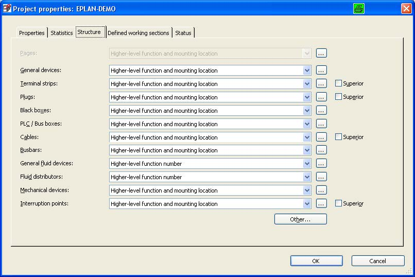
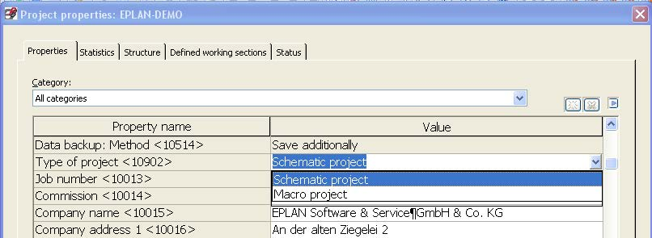
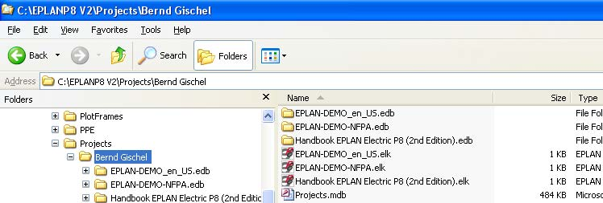

Прежде чем вы сможете редактировать схемы в EPLAN, проект должен быть создан.
ПРИМЕЧАНИЕ: в EPLAN место хранения проектов и названия отдельных проектов могут быть свободно выбраны. Единственные ограничения на именование накладывает ОС Windows.
Когда структура страниц и устройств определена, проект обладает всеми необходимыми свойствами, такими как структура устройств (например структурным идентификатором места установки, который должен быть использован), а также основными данными такими как формы, данные изделий, определения функций, библиотеки символов и т. п. необходимыми для редактирования проекта.
Свойства проекта - вкладка Структура 
Все эти данные хранятся в проекте. Данные добавленные позже, такие как формы, также хранятся в проекте. Этот подход (хранения основных данных вместе с проектом) обеспечивает возможность последующего редактирования проекта с теми же данными которые были использованы при создании проекта, или сохранены в проекте при его редактировании.
EPLAN может работать с двумя типами проектов: это проекты схем соединений (стандартный проект применяемый на практике) и проекты макросов
Проекты макросов используются для создания и редактирования макросов. Логические функции, такие как перекрестные ссылки и информация о соединениях в проектах макросов не поддерживаются и соответсвенно не отображаются.
При необходимости проект схем соединений может быть легко преобразован в проект макросов при помощи свойства <10902 Тип проекта>
Свойства проекта - вкладка Свойства 
Других типов проектов не существует. Основные данные (такие как формы и символы) обрабатываются непосредственно текущего из проекта. Обрабатываются основные данные хранящиеся в пулле основных данных системы, после их закрытия и сохранения, они (основные данные) могут быть синхронизированы с основными данными текущего проекта (в зависимости от настроек). Так же основные данные системы, могут быть синхронизированы с основными данными проекта, вручную. Синхронизация основных данных возможана как в одном (из пулла основных данных в проект) так и в обратном (из проекта в пулл основных данных) направлении. Если при синхронизации основных данных EPLAN обнаруживает несоответствие синхронизируемых основных данных, то генерируется соответствующее сообщение и синхронизация отменяется, так как несовместимые основные данные не могут быть использованы для перезаписи существующих основных данных. Например когда выводы символа, размещенного в проекте, не соответствуют выводам этого же символа в синхронизируемой библиотеке символов, такая библиотека символов не может быть синхронизирована.
Проект состоит из директории Projectname.edb и файла Projectname.elk (расширение файла .elk указывает на то что это нормально редактируемый проект схем соединений).
Директория проектов 
Также Вы можете запустить проект из проводника при помощи двойного клика мыши по файлу Projectname.elk . Проект также можно открыть путем перетаскивания (Drag&Drop) файла Projectname.elk из проводника в навигатор страниц.